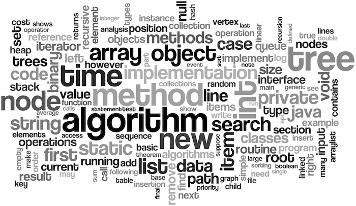

큐는 스택과 반대로 선입선출(FIFO, First In First Out)의 구조를 가지는 자료구조이다.
먼저 들어온 놈이 먼저 나가는 구조이니 입력 순서에 따른 처리를 위한 자료에서 많이 사용한다. (OS의 프로세스 스케쥴링)
스택과 비교해보면 push 대신에 offer, pop 대신에 offer를 메소드를 사용한다.
만들어보자!
기본적으로 큐를 만들어보기 전에 먼저 링크드리스트에 대해 알아야한다.
기존에 스택처럼 생각했을 때 두 가지 데이터를 들고 있어야했다.
- 인덱스(몇 번째에 데이터를 삽입하고 뽑아낼지)
- 실제 데이터 덩어리
이 경우에는 데이터를 기존의 스택 크기보다 많이 삽입했을 때만 복사가 이루어졌다.
하지만 큐의 경우에는 스택과 같이 두 개의 데이터만 들고 있다고 가정했을 때
데이터를 기존의 스택 크기보다 많이 삽입했을 때만 복사가 이루어지는 건 당연하고,
데이터를 꺼낼 때 처음 인덱스의 데이터를 꺼내야하는데 그렇게 되면 이가 빠진 것처럼 왼쪽이 비기 때문에 전부 한 칸씩 땡겨야한다.
즉, 데이터를 삽입/삭제(추출?) 할 때 모두 큰 비용을 들이게 된다.
따라서 큐를 구현할 때는 스택에서 출발할 게 아니라 링크드리스트에서 출발을 해야한다.
링크드리스트의 구조 대로 구현하면 삽입/삭제가 용이하기 때문이다.